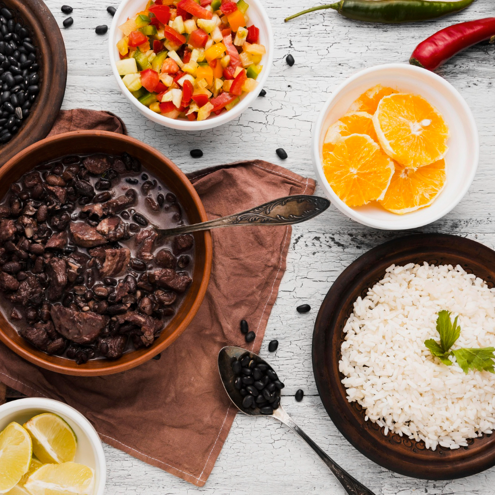

Feijoada
Feijoada is a dish that consists of a stew of black beans with various types of pork and beef. It is served with farofa, white rice, sautéed kale, and sliced oranges, among other sides. It is a popular dish, typical of Brazilian cuisine.
Wikipedia